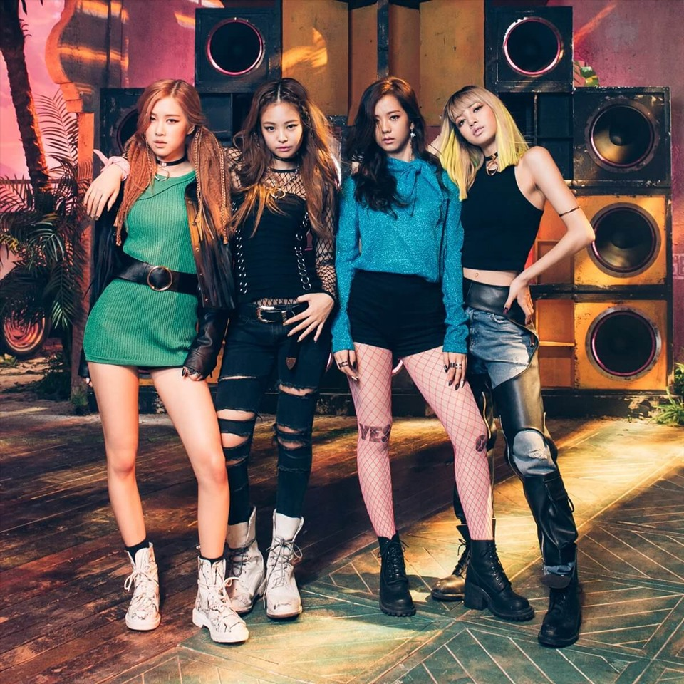

Các thành viên nhóm nhạc Blackpink
 .
.
Vì sao Blackpink trở thành nhóm nhạc nữ Kpop thành công bậc nhất?
Sau 6 năm hoạt động, Blackpink trở thành nhóm nhạc nữ nổi tiếng nhất thế hệ thứ 3 Kpop, và cũng được công nhận là nghệ sĩ Hàn Quốc có tầm ảnh hưởng lớn trên toàn cầu. 4 cô gái với tài năng âm nhạc, phong cách độc đáo đã góp phần lan tỏa mạnh mẽ làn sóng Hallyu ra toàn thế giới.
4 idol được “sàng lọc” khắt khe
YG Entertainment, “cái nôi” của những nhóm nhạc huyền thoại với phong cách âm nhạc độc đáo như Big Bang, 2NE1, cũng nổi tiếng là một trong những công ty giải trí có quá trình tuyển chọn và đào tạo thực tập sinh khắc nghiệt bậc nhất Hàn Quốc. Tất nhiên, Blackpink (ra mắt năm 2016) không ngoại lệ.
Yang Hyun Sik - người sáng lập YG - luôn quan niệm, tài năng là yếu tố đặt lên hàng đầu, thần tượng phải thực sự tài năng mới có thể tỏa sáng. Ngoại hình hay hoàn cảnh xuất thân đều không phải vấn đề lớn.
Vậy nên, giống như những đàn anh, đàn chị kỳ cựu, 4 thành viên Blackpink đến từ nhiều nguồn gốc khác nhau, song đều là những idol được “sàng lọc” khắt khe, phải thật sự giỏi ít nhất 1 trong 3 kỹ năng hát, vũ đạo, rap.
Jennie, rapper chính của nhóm, lớn lên ở Seoul và New Zealand trước khi gia nhập YG vào năm 2010, cũng là idol thực tập lâu nhất, 6 năm.
Chị cả Jisoo là idol Hàn Quốc “chính hiệu”, được đào tạo trong 5 năm. Tương đương với thời gian của Lisa, người đã rời quê hương Thái Lan để trở thành thực tập sinh YG vào năm 2011.
Cuối cùng, giọng ca chính Rosé sinh ra ở New Zealand và lớn lên ở Úc. Cô đánh bại 700 thí sinh trong buổi thử giọng của YG tại Sydney để gia nhập công ty năm 2012.
Jennie từng kể rằng, trong suốt 6 năm thực tập, mỗi ngày cô phải luyện tập đến 2h sáng và học mọi kỹ năng hát, nhảy, ngoại ngữ, ứng xử. Rosé tiết lộ, họ phải luyện tập 14 tiếng một ngày, mỗi đợt kéo dài 13 ngày liên tục.
Sau nhiều năm huấn luyện và 6 năm nhóm hoạt động chính thức, “lò đào tạo” YG đã có được một Blackpink với thứ âm nhạc độc nhất, cùng sự ủng hộ của cộng đồng người hâm mộ đông đảo, rộng khắp, nhiệt thành trên toàn cầu.
Âm nhạc gây nghiện
Ngày 8.8.2016, Blackpink đổ bộ làng nhạc với 2 MV “Boombayah”, “Whistle”, cùng câu rap trở thành biểu tượng “Blackpink in your area” mang ý nghĩa “dù bạn ở bất kỳ đâu, Blackpink sẽ ở đó”.
Blackpink khiến công chúng kinh ngạc khi nhanh chóng nổi tiếng chỉ với 2 sản phẩm đầu tay.
Trong buổi họp báo ra mắt mini album “Square up” với ca khúc chủ đề “Ddu-du Ddu-du” vào tháng 6.2018, Blackpink đã được khen “tỏa ra hào quang của một nhóm nhạc kỳ cựu”, dù thời điểm đó họ hoạt động chưa tới 2 năm.
Âm nhạc Blackpink tạo sức mạnh bùng nổ như “chất gây nghiện”, dưới bàn tay ma thuật của nhà sản xuất Teddy. Sự pha trộn giữa nhịp điệu hip-hop mạnh mẽ với house, EDM và nhiều thể loại khác, đã tạo ra loạt hit đậm chất Blackpink.
Các MV của họ ngập tràn màu sắc và vũ đạo sáng tạo, thể hiện tinh thần phóng khoáng, độc lập, mạnh mẽ của phụ nữ. Blackpink kế thừa sự tự tin, độc đáo của 2NE1, đồng thời thêm vào đó thứ âm nhạc hơi hướng US-UK đầy sức hút.
“The Album” (2020) tiêu thụ 1,2 triệu bản trong vòng chưa đầy 1 tháng sau khi phát hành, đưa Blackpink trở thành nhóm nhạc nữ Kpop đầu tiên bán được trên 1 triệu album.
Không chỉ thống trị thành tích các nhóm nữ trong nước, Blackpink vươn tầm quốc tế khi là nhóm nhạc Kpop đầu tiên trình diễn ở lễ hội âm nhạc Coachella của Mỹ, hợp tác với các ngôi sao đình đám như Lady Gaga, Selena Gomez, Cardi B.
Đi ngược số đông
Giống như “ông hoàng Kpop” Big Bang, dưới định hướng chiến lược của YG, Blackpink không đi theo công thức hoạt động chung như số đông các nhóm nhạc khác.
Mô hình nhóm nhạc vốn là ưu thế của Kpop, các công ty hầu hết đều đẩy mạnh phát triển hoạt động nhóm, hơn là hoạt động cá nhân. Idol chỉ tách ra solo khi đã đủ kinh nghiệm và nhóm có chỗ đứng vững chắc.
Nhưng YG để Blackpink lội ngược dòng. Blackpink phá bỏ giới hạn khi chưa đầy 2 năm hoạt động đã tập trung xây dựng thương hiệu cá nhân của từng thành viên.
Jennie phát hành đĩa đơn “Solo” năm 2018. Tiếp đó, Rosé ra mắt album “-R-” và ca khúc chủ đề “On the ground” năm 2021. Tháng 9 cùng năm, Lisa trình làng album “Lalisa”, thiết lập loạt kỷ lục mới.
Jisoo dù chưa có ca khúc riêng nhưng được đẩy mạnh hoạt động phim ảnh, với vai nữ chính trong phim truyền hình “Snowdrop” đóng cùng Jung Hae In.
Cách YG kết nối chặt chẽ âm nhạc với thời trang cũng khiến Blackpink khoác trên mình một hình ảnh “đẳng cấp” ngay từ khi mới ra mắt.
Phong cách của 4 nữ idol trở thành xu hướng. Blackpink dần được những thương hiệu thời trang, trang sức xa xỉ để mắt, săn đón làm gương mặt đại diện.
Blackpink xây dựng chỗ đứng vững chắc thông qua việc mở rộng tầm ảnh hưởng trên mọi lĩnh vực. Đến mức, dù "lười" phát hành nhạc, họ vẫn có cộng đồng fan trung thành.
Chỉ cần một tín hiệu trở lại với âm nhạc đã khiến mạng xã hội “dậy sóng”.